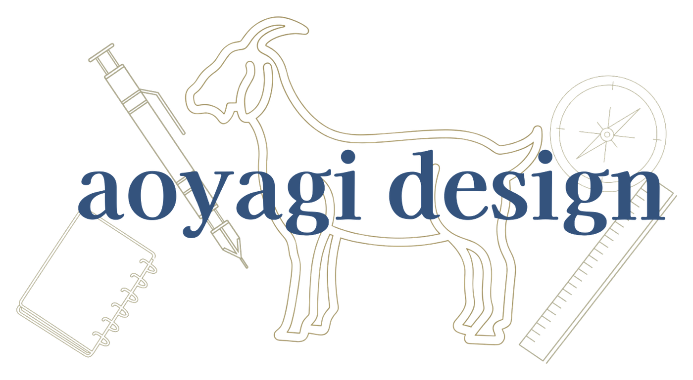

使う人の動きから、考える。
KotlinとJetpack Composeを使い、日々の操作を助けるアプリを設計・実装。画面のわかりやすさと、操作の流れを大切にしています。
Kotlin / Jetpack Compose
A little curiosity.
A lot of making.
日常の「もう少しこうだったら」から、ものづくりは始まります。
コードを書いたり、図面を引いたり。考えたことを、少しずつかたちにしていきます。
試して、見直して、またつくる。
その積み重ねと、細部まで向き合う時間を大切にしています。
Kazuki Aoyagi
aoyagi design
moyashi manufacture 技術協力
はじめまして、青柳和貴です。まずはサイトに訪れてくれた方々に感謝します。私は今高校生で学生生活と製作を両立しながら日々いろいろなことに挑戦しています。
KotlinとJetpack Composeによるアプリ開発、Adobe Premiere Pro・After Effectsや Yukkuri Movie Maker を活用した動画製作、Onshapeを使った3D CAD設計、Pythonでのジェネラティブアート制作、自作PCの設計・組み立てまで。ジャンルを横断しながら「つくる」ことに向き合うのが好きです。
どの作業でも、細部の精度にはこだわっています。幅広く、深く、楽しくを第一に考えた製作を心掛け、目指していきます。
デジタルと、フィジカルと。
それぞれの学びが、次の制作につながる。
各領域をひらくと、制作の考え方をご覧いただけます。
KotlinとJetpack Composeを使い、日々の操作を助けるアプリを設計・実装。画面のわかりやすさと、操作の流れを大切にしています。
Kotlin / Jetpack Composeカットのつながり、音のタイミング、文字の動き。ひとつずつ整えながら、伝えたいことが届く映像をつくります。
Premiere Pro / After Effects / YMMOnshapeでパーツや筐体を設計し、寸法や組み立てを検討。画面上のモデルと実際の使い方を行き来しながら、精度を詰めていきます。
Onshape / 3D Printing / PythonPython、numpy、OpenCVで、線や色、質感を組み立てる。規則とゆらぎのあいだを探り、静止画からアニメーションへ表現を広げています。
Python / numpy / OpenCVロゴタイプ、色、余白のバランスを整え、伝えたい印象をかたちに。ひとつのマークから、使う場面に広がる一貫性を考えます。
Typography / Logo / Color system用途に合わせたパーツ選定から組み立てまで。CADによる筐体の検証も取り入れ、部品の収まりと全体の構成を考えます。
Parts selection / Assembly / CAD2018 — 9歳
小学校在学中、「Yukkuri Movie Maker 4」で動画編集に出会う。デジタルコンテンツ制作の楽しさに気づいた原点。
2022 — 13歳
中学校の「ものづくり・PC部」に入部。デザインの基礎を学びながら動画編集も続け、中学2年・3年で「にいがたデジコングランプリ」動画部門 奨励賞を2年連続受賞。
2025 — 現在（16, 17歳）
高校生になり、部活の仲間と再結成。3DプリンターとCADを本格的に学び、暮らしを便利にする道具を考え、つくっている。
Let’s make
something.
お問い合わせ窓口は、ただいま準備中です。
公開まで、もうしばらくお待ちください。